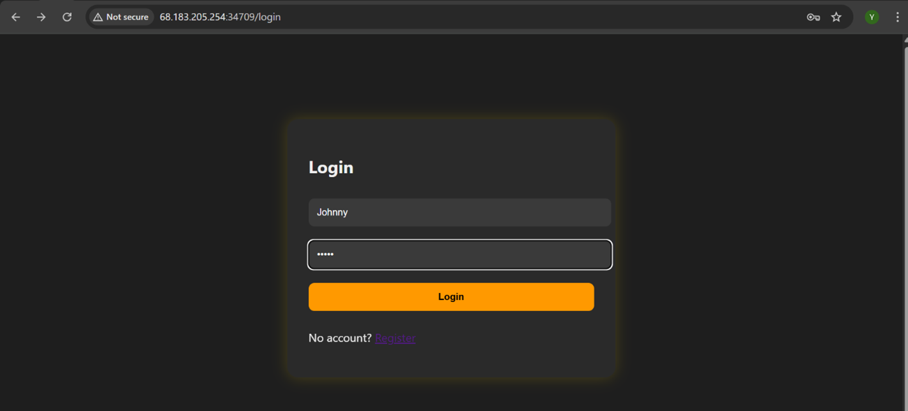
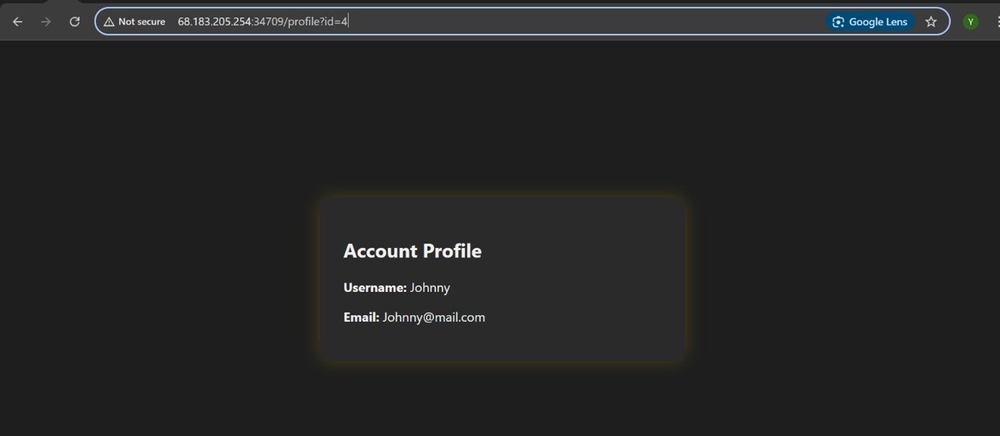
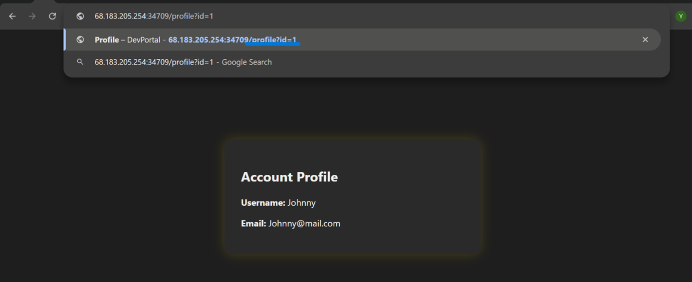
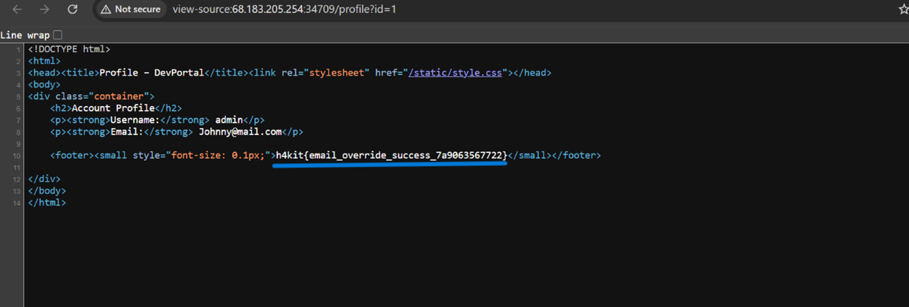
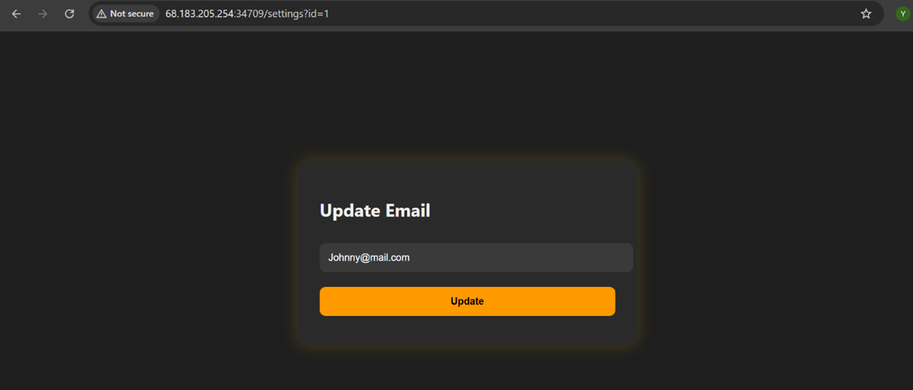

Objective
My mission (which I happily accepted) was to figure out whether I could take control of another user’s account just by playing around with URLs and form data. Basically… can I become admin without actually being admin?
Tools Used
- Chrome (my loyal sidekick)
- Curiosity and a bit of suspicion
- Manual testing (because sometimes simple is powerful)
Step 1: Getting In
First things first — I created a normal user account and logged in. Nothing fancy here… yet.
Everything looked perfectly normal — which in CTFs usually means something is definitely not normal.

Step 2: The “Hmm…” Moment
After logging in, I checked my profile URL and noticed something interesting:
http://target/profile?id=4
Anytime I see an id in a URL, my brain immediately goes:
"What happens if I change that?"
So I did what any curious person would do — I changed it.
?id=4 → ?id=1
And just like that… I was inside another user’s profile.
No warning. No permission check. No “hey, that’s illegal” popup.

Step 3: Accidental Promotion to Admin
Then I tried ?id=1… and it worked.
I landed on the admin account.
At this point I wasn’t even hacking anymore — the application was basically giving me a guided tour of its vulnerabilities.

Step 4: Finding the Flag
With admin access secured (way too easily), I checked the page source — because flags love hiding there.
And sure enough, I found:
h4kit{email_override_success_7a9063567722}

Not going to lie… that felt a little too easy.
Step 5: What Else Can I Break?
Naturally, I got curious again.
I navigated to the settings page:
http://target/settings?id=4
Then changed it to:
?id=1
And just like that… I could edit another user’s account.
I even changed the admin’s email and the system accepted it without question, as you can see below it accepts updates.
At this point, the app basically trusted me more than it trusted itself.

Conclusion
This was a classic case of Broken Access Control.
The application never checked whether I was actually allowed to view or modify other users’ data it just assumed I should.
Which is great for me… but terrible for security.
Recommended Fix
- Always verify user authorization on the backend
- Never trust user-controlled input like URL parameters
- Implement proper access control checks for every request